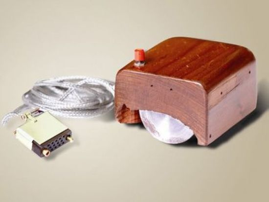
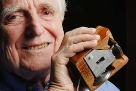

История компьютерной мыши
9 декабря 1968 года компьютерная мышь
была представлена на показе интерактивных
устройств в Калифорнии. Патент на этот
гаджет получил Дуглас Энгельбарт в 1970
году. Первым компьютером, в набор которого
включалась мышь, был мини-компьютер
Xerox 8010 Star Information System,
представленный в 1981 году.


Эволюция компьютерной мыши